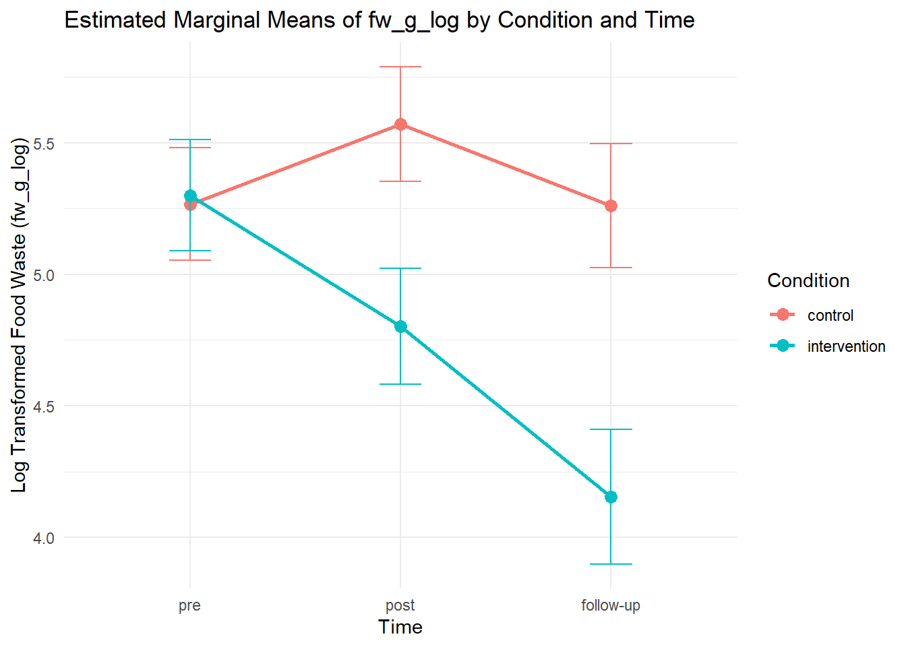

| intervention (N=32) |
control (N=31) |
Overall (N=63) |
|
|---|---|---|---|
| Gender | |||
| Female | 25 (78.1%) | 22 (71.0%) | 47 (74.6%) |
| Male | 6 (18.8%) | 7 (22.6%) | 13 (20.6%) |
| Other | 1 (3.1%) | 2 (6.5%) | 3 (4.8%) |
| Age | |||
| Mean (SD) | 20.4 (2.01) | 20.8 (2.16) | 20.6 (2.08) |
| Median [Min, Max] | 20.0 [18.0, 26.0] | 20.0 [18.0, 27.0] | 20.0 [18.0, 27.0] |
| Household size | |||
| Mean (SD) | 6.28 (5.08) | 7.10 (5.64) | 6.68 (5.34) |
| Median [Min, Max] | 5.00 [2.00, 26.0] | 5.00 [2.00, 25.0] | 5.00 [2.00, 26.0] |
| Baseline waste | |||
| Mean (SD) | 303 (277) | 340 (420) | 321 (352) |
| Median [Min, Max] | 217 [13.0, 1270] | 180 [16.0, 1800] | 197 [13.0, 1800] |
Tape Intervention R Script
Sample Characteristics
Descriptives
| Variable | Mean | Sd | Median |
|---|---|---|---|
| Days at home | 5.3 | 1.4 | 5 |
| Days ate at home | 3.9 | 1.5 | 4 |
| Days prepared food | 3.2 | 1.7 | 3 |
| Check if near expiry | 70 | 28 | 76 |
| Habit: Check if near expired | 5.1 | 1.4 | 5.5 |
| Use near expired food in meal | 84 | 23 | 92 |
| Habit: Use near expired food in meal | 5.3 | 1.1 | 5.5 |
| Snack near expired | 70 | 27 | 77 |
| Habit: Snack near expired | 4.9 | 1.3 | 5 |
| Share near expired | 54 | 39 | 66 |
| Habit: Share near expired | 4 | 1.7 | 4.2 |
Show R script
tall$time <- factor(tall$time, levels = c(0,1,2), labels = c("pre", "post", "follow-up"))
tall %>%
group_by(condition, time) %>%
summarise(
n=n(),
mean=mean(fw_g),
sd=sd(fw_g)
) %>%
mutate(se = sd/sqrt(n)) %>%
mutate(ci=se*qt((1-0.05)/2 + .5, n-1)) %>%
ggplot(aes(x = time, y = mean, fill = condition)) +
geom_bar(stat = "summary", fun = "mean", position = "dodge") +
geom_errorbar(aes(ymin = mean - ci, ymax = mean + ci),
position = position_dodge(width = 0.9), width = 0.25) +
labs(title = "Food waste (g) over time by condition with 95% CI",
x = "Time",
y = "Food Waste (g)",
fill = "Condition") +
theme_minimal()
tall <- mutate(tall, fw_g_log = log(fw_g + 1))
tall %>%
group_by(condition, time) %>%
summarise(
n=n(),
mean=mean(fw_g_log),
sd=sd(fw_g_log)
) %>%
mutate(se = sd/sqrt(n)) %>%
mutate(ci=se*qt((1-0.05)/2 + .5, n-1)) %>%
ggplot(aes(x = time, y = mean, fill = condition)) +
geom_bar(stat = "summary", fun = "mean", position = "dodge") +
geom_errorbar(aes(ymin = mean - ci, ymax = mean + ci),
position = position_dodge(width = 0.9), width = 0.25) +
labs(title = "Food waste (g) over time by condition with 95% CI",
x = "Time",
y = "Food Waste (g)",
fill = "Condition") +
theme_minimal() 

Bar plots
Inferential statistics
These always predict the log of food waste as it is more normally distributed
No sinificant effect for age, gender and household size on food waste. They are not included as covariates
Show R script
tall <- tall %>%
group_by(id) %>%
mutate(age = ifelse(is.na(age), first(age), age),
gender = ifelse(is.na(gender), first(gender), gender)) %>%
ungroup()
tall$gender[tall$gender == 4] <- 3
tall$gender <- factor(tall$gender, levels = c(1,2,3), labels = c("Female", "Male", "Other"))
lm_fw_1 <- lmer(fw_g_log ~ age + gender + hh_size + (1|id), data = tall)
flextable(tidy(lm_fw_1)) %>% colformat_double(digits = 2)effect | group | term | estimate | std.error | statistic |
|---|---|---|---|---|---|
fixed | (Intercept) | 3.60 | 1.24 | 2.90 | |
fixed | age | 0.06 | 0.06 | 0.94 | |
fixed | genderMale | 0.33 | 0.29 | 1.15 | |
fixed | genderOther | 0.31 | 0.63 | 0.49 | |
fixed | hh_size | 0.04 | 0.02 | 1.82 | |
ran_pars | id | sd__(Intercept) | 0.65 | ||
ran_pars | Residual | sd__Observation | 1.06 |
Show R script
lm_fw_2 <- lmer(fw_g_log ~ condition*time + (1|id), data = tall)
nlme_fw <- lme(fw_g_log ~ condition * time, random = ~1 | id, data = tall)
flextable(tidy(nlme_fw)) %>% colformat_double(digits = 2)effect | group | term | estimate | std.error | df | statistic | p.value |
|---|---|---|---|---|---|---|---|
fixed | (Intercept) | 5.27 | 0.21 | 101.00 | 24.55 | 0.00 | |
fixed | conditionintervention | 0.03 | 0.30 | 61.00 | 0.11 | 0.91 | |
fixed | timepost | 0.30 | 0.26 | 101.00 | 1.17 | 0.24 | |
fixed | timefollow-up | -0.01 | 0.28 | 101.00 | -0.02 | 0.98 | |
fixed | conditionintervention:timepost | -0.80 | 0.37 | 101.00 | -2.17 | 0.03 | |
fixed | conditionintervention:timefollow-up | -1.14 | 0.40 | 101.00 | -2.84 | 0.01 | |
ran_pars | id | sd_(Intercept) | 0.63 | ||||
ran_pars | Residual | sd_Observation | 1.01 |
Show R script
flextable(as_tibble(confint(lm_fw_2), rownames = "term")) %>% colformat_double(digits = 3)Computing profile confidence intervals ...term | 2.5 % | 97.5 % |
|---|---|---|
.sig01 | 0.392 | 0.856 |
.sigma | 0.875 | 1.142 |
(Intercept) | 4.852 | 5.683 |
conditionintervention | -0.551 | 0.616 |
timepost | -0.200 | 0.809 |
timefollow-up | -0.540 | 0.529 |
conditionintervention:timepost | -1.518 | -0.087 |
conditionintervention:timefollow-up | -1.920 | -0.363 |
Mixed model regression of food waste predicted by condition*time
Contrasts
The test shows a significant interaction of condition over time, so I will calculate emmeans and contrasts.
Show R script
fw_emmeans <- emmeans(nlme_fw, specs = ~ condition | time)
contrasts <- contrast(fw_emmeans, method = "pairwise", adjust = "tukey")
contrasts_time <- contrast(fw_emmeans, method = "pairwise", by = "condition")
flextable(tidy(contrasts_time)) %>% colformat_double(digits = 3)condition | term | contrast | null.value | estimate | std.error | df | statistic | adj.p.value |
|---|---|---|---|---|---|---|---|---|
control | time | pre - post | 0.000 | -0.305 | 0.260 | 101.000 | -1.172 | 0.473 |
control | time | pre - (follow-up) | 0.000 | 0.006 | 0.276 | 101.000 | 0.023 | 1.000 |
control | time | post - (follow-up) | 0.000 | 0.311 | 0.277 | 101.000 | 1.123 | 0.502 |
intervention | time | pre - post | 0.000 | 0.497 | 0.261 | 101.000 | 1.901 | 0.144 |
intervention | time | pre - (follow-up) | 0.000 | 1.145 | 0.291 | 101.000 | 3.933 | 0.000 |
intervention | time | post - (follow-up) | 0.000 | 0.648 | 0.295 | 101.000 | 2.195 | 0.077 |
Show R script
flextable(tidy(contrasts)) %>% colformat_double(digits = 3)time | term | contrast | null.value | estimate | std.error | df | statistic | p.value |
|---|---|---|---|---|---|---|---|---|
pre | condition | control - intervention | 0.000 | -0.032 | 0.301 | 61.000 | -0.108 | 0.914 |
post | condition | control - intervention | 0.000 | 0.769 | 0.310 | 61.000 | 2.479 | 0.016 |
follow-up | condition | control - intervention | 0.000 | 1.107 | 0.348 | 61.000 | 3.180 | 0.002 |
Show R script
fw_emmeans_df <- as.data.frame(fw_emmeans)
ggplot(fw_emmeans_df, aes(x = time, y = emmean, color = condition, group = condition)) +
geom_point(size = 3) +
geom_line(size = 1) +
geom_errorbar(aes(ymin = emmean - SE, ymax = emmean + SE), width = 0.2) +
labs(title = "Estimated Marginal Means of fw_g_log by Condition and Time",
x = "Time",
y = "Log Transformed Food Waste (fw_g_log)",
color = "Condition") +
theme_minimal()Warning: Using `size` aesthetic for lines was deprecated in ggplot2 3.4.0.
ℹ Please use `linewidth` instead.
In the contrasts it shows that:
- There is a significant drop in food waste for the intervention group from baseline to post-measure, but not in the control group
- There is a marginally significant drop in food waste for the intervention group from post to follow-up
- at baseline, there is no difference between control and intervention
- at post and followup, people in the intervention group waste significantly less than those in the control group
Habit analysis
In this part I will first look if habit strength of the four behaviours can be predicted by condition*time
Show R script
lme_stockhs <- lme(hs_stock ~ condition*time, random = ~1|id, data = tall)
flextable(tidy(lme_stockhs)) %>% colformat_double(digits = 2)effect | group | term | estimate | std.error | df | statistic | p.value |
|---|---|---|---|---|---|---|---|
fixed | (Intercept) | 5.38 | 0.25 | 101.00 | 21.77 | 0.00 | |
fixed | conditionintervention | -0.93 | 0.35 | 61.00 | -2.67 | 0.01 | |
fixed | timepost | -0.28 | 0.24 | 101.00 | -1.16 | 0.25 | |
fixed | timefollow-up | 0.13 | 0.25 | 101.00 | 0.51 | 0.61 | |
fixed | conditionintervention:timepost | 0.69 | 0.34 | 101.00 | 2.05 | 0.04 | |
fixed | conditionintervention:timefollow-up | 0.63 | 0.37 | 101.00 | 1.69 | 0.09 | |
ran_pars | id | sd_(Intercept) | 1.02 | ||||
ran_pars | Residual | sd_Observation | 0.93 |
Show R script
emmeans_stockhs <- emmeans(lme_stockhs, specs = ~ condition | time)
contrasts_stockhs <- contrast(emmeans_stockhs, method = "pairwise", adjust = "tukey")
contrasts_time_stockhs <- contrast(emmeans_stockhs, method = "pairwise", by = "condition")
flextable(tidy(contrasts_time_stockhs)) %>% colformat_double(digits = 3)condition | term | contrast | null.value | estimate | std.error | df | statistic | adj.p.value |
|---|---|---|---|---|---|---|---|---|
control | time | pre - post | 0.000 | 0.275 | 0.238 | 101.000 | 1.156 | 0.482 |
control | time | pre - (follow-up) | 0.000 | -0.131 | 0.254 | 101.000 | -0.514 | 0.864 |
control | time | post - (follow-up) | 0.000 | -0.406 | 0.255 | 101.000 | -1.594 | 0.253 |
intervention | time | pre - post | 0.000 | -0.419 | 0.241 | 101.000 | -1.742 | 0.195 |
intervention | time | pre - (follow-up) | 0.000 | -0.758 | 0.271 | 101.000 | -2.803 | 0.017 |
intervention | time | post - (follow-up) | 0.000 | -0.339 | 0.273 | 101.000 | -1.242 | 0.431 |
Show R script
flextable(tidy(contrasts_stockhs)) %>% colformat_double(digits = 3)time | term | contrast | null.value | estimate | std.error | df | statistic | p.value |
|---|---|---|---|---|---|---|---|---|
pre | condition | control - intervention | 0.000 | 0.926 | 0.347 | 61.000 | 2.671 | 0.010 |
post | condition | control - intervention | 0.000 | 0.231 | 0.355 | 61.000 | 0.652 | 0.517 |
follow-up | condition | control - intervention | 0.000 | 0.298 | 0.386 | 61.000 | 0.774 | 0.442 |
Show R script
emmeans_stock_df <- as.data.frame(emmeans_stockhs)
ggplot(emmeans_stock_df, aes(x = time, y = emmean, color = condition, group = condition)) +
geom_point(size = 3) +
geom_line(size = 1) +
geom_errorbar(aes(ymin = emmean - SE, ymax = emmean + SE), width = 0.2) +
labs(title = "Estimated Marginal Means of habit strength of stock checking by Condition and Time",
x = "Time",
y = "Habit strength",
color = "Condition") +
theme_minimal()